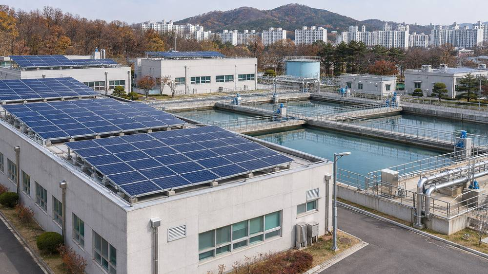

지역
인천도시공사, 수산·공촌정수사업소 태양광 5.7메가와트 실시협약

상수도사업본부·제이에이치에너지와 3자 협약, 시의회 의결은 내년 상반기
인천도시공사(iH)가 11월 13일 수산정수사업소와 공촌정수사업소의 정수장 부지와 자산에 약 5.7메가와트(MW) 규모의 태양광 발전시설을 세우는 실시협약을 맺었다. 협약 당사자는 iH, 인천시 상수도사업본부, 민간 사업자 ㈜제이에이치에너지 세 곳이며, 체결은 iH 상황실에서 이뤄졌다. 2025년 12월 iH와 상수도사업본부가 맺은 기본협약을 구체화한 후속 협약(실시협약)으로, iH가 사업을 총괄해 올해 9월 사업자 선정을 마쳤다.
상수도사업본부는 2023년 6월 29일 누리집 게시물에서 4개 정수장에 태양광 10개소와 소수력 1개소를 운영한다고 소개했다. 2024년 인천시 에너지 전담기관이 된 iH는 공영주차장 태양광을 비롯한 지역 재생에너지 사업을 추진해 왔다. 류윤기 iH 사장은 "iH는 공공의 책임과 협력의 가치를 바탕으로 인천의 재생에너지 기반을 꾸준히 넓히고 있다"고 밝혔다. 이 사업은 2027년 상반기 인천시의회 의결 등 절차를 거쳐 추진한다.
출처: 인천도시공사 2026-11-13 보도자료 "iH, 상수도사업본부, ㈜제이에이치에너지와 태양광 발전사업 실시 협약 체결" 원문 보기
출처: 데일리안 2026-11-13 장현일 원문 보기
출처: 인천시 상수도사업본부 2023-06-29 게시물 "인천하늘수 정수장, 태양광 발전설비 추가 설치" 원문 보기
시민이 만들고 지역이 소유하는 에너지 전환제4섹터 방식 시민주도 지역에너지 공공개발